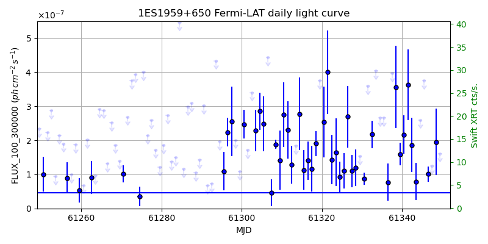
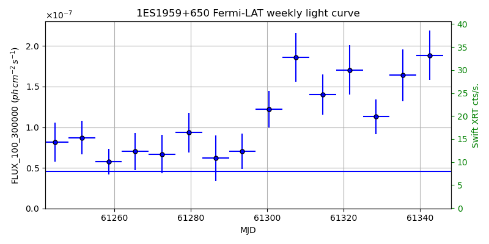
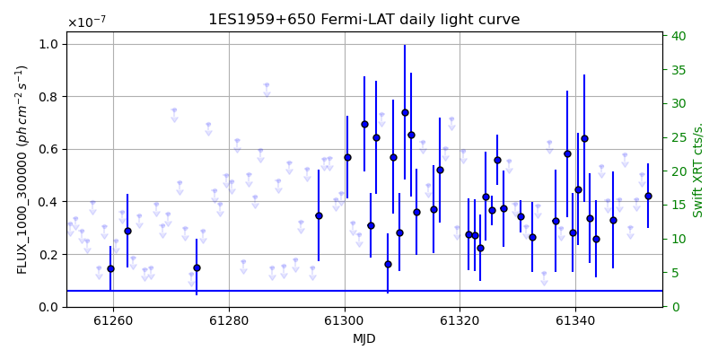
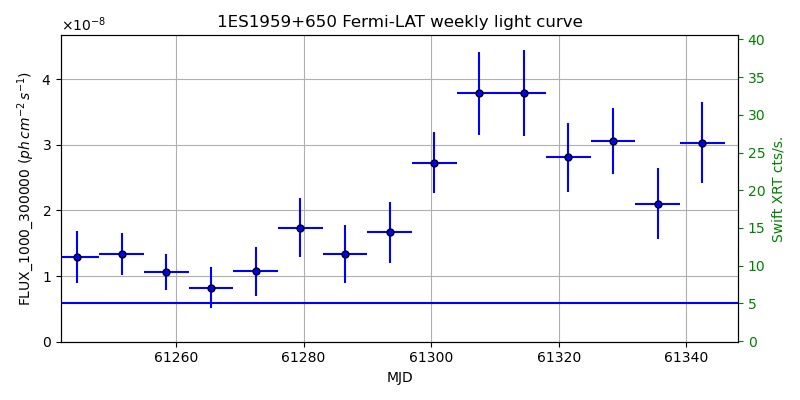

LAT Lightcurve site: https://fermi.gsfc.nasa.gov/ssc/data/access/lat/msl_lc/source/1ES_1959p650
Swift site: https://www.swift.psu.edu/monitoring/source.php?source=1ES1959+650
NED: Query
Time of last update of this page: UT: 2026-11-06 16:26 (MJD: 61350.685)
| Property | Value |
|---|---|
| R.A. | 20:00:00.00 |
| Dec. | 65:08:56.4 |
| z | 0.047 |
| 3FGL SpectrumType | PowerLaw |
| 3FGL PL Index | 1.88 |
| 3FGL Flux_100_300000 | 4.53e-08 1 / (s cm2) |
| 3FGL Flux_1000_300000 | 5.90e-09 1 / (s cm2) |
| 3FGL Flux >200 GeV | 5.42e-11 1 / (s cm2) |
| 3FGL Extrap. Crab >200 GeV | 0.23 |
| 3FGL Flux After EBL Absorption >200GeV | 4.19e-11 1 / (s cm2) |
| 3FGL EBL Crab Fraction >200GeV | 0.18 |

| MJD | dMJD | Flux | dFlux | Frac3FGL | FracCrab>200GeV | EBLFracCrab>200GeV |
|---|---|---|---|---|---|---|
| 61345.50 | 0.50 | 3.76e-07 | 0.00e+00 | 0.00 | 0.00 | 0.00 |
| 61346.50 | 0.50 | 1.01e-07 | 2.19e-08 | 2.23 | 0.52 | 0.40 |
| 61347.50 | 0.50 | 1.25e-07 | 0.00e+00 | 0.00 | 0.00 | 0.00 |
| 61348.50 | 0.50 | 1.95e-07 | 9.76e-08 | 4.31 | 1.00 | 0.77 |
| 61349.50 | 0.50 | 1.61e-07 | 0.00e+00 | 0.00 | 0.00 | 0.00 |

| MJD | dMJD | Flux | dFlux | Frac3FGL | FracCrab>200GeV | EBLFracCrab>200GeV |
|---|---|---|---|---|---|---|
| 61314.50 | 3.50 | 1.40e-07 | 2.48e-08 | 3.08 | 0.72 | 0.56 |
| 61321.50 | 3.50 | 1.70e-07 | 3.03e-08 | 3.76 | 0.87 | 0.67 |
| 61328.50 | 3.50 | 1.13e-07 | 2.15e-08 | 2.49 | 0.58 | 0.45 |
| 61335.50 | 3.50 | 1.64e-07 | 3.21e-08 | 3.61 | 0.84 | 0.65 |
| 61342.50 | 3.50 | 1.89e-07 | 3.05e-08 | 4.16 | 0.96 | 0.74 |

| MJD | dMJD | Flux | dFlux | Frac3FGL | FracCrab>200GeV | EBLFracCrab>200GeV |
|---|---|---|---|---|---|---|
| 61345.50 | 0.50 | 4.05e-08 | 0.00e+00 | 0.00 | 0.00 | 0.00 |
| 61346.50 | 0.50 | 3.31e-08 | 1.84e-08 | 5.61 | 1.30 | 1.01 |
| 61347.50 | 0.50 | 4.09e-08 | 0.00e+00 | 0.00 | 0.00 | 0.00 |
| 61348.50 | 0.50 | 5.79e-08 | 0.00e+00 | 0.00 | 0.00 | 0.00 |
| 61349.50 | 0.50 | 3.04e-08 | 0.00e+00 | 0.00 | 0.00 | 0.00 |

| MJD | dMJD | Flux | dFlux | Frac3FGL | FracCrab>200GeV | EBLFracCrab>200GeV |
|---|---|---|---|---|---|---|
| 61314.50 | 3.50 | 3.79e-08 | 6.53e-09 | 6.43 | 1.49 | 1.15 |
| 61321.50 | 3.50 | 2.81e-08 | 5.33e-09 | 4.76 | 1.10 | 0.85 |
| 61328.50 | 3.50 | 3.06e-08 | 5.01e-09 | 5.18 | 1.20 | 0.93 |
| 61335.50 | 3.50 | 2.10e-08 | 5.40e-09 | 3.56 | 0.83 | 0.64 |
| 61342.50 | 3.50 | 3.03e-08 | 6.17e-09 | 5.14 | 1.19 | 0.92 |
--------------------------------------------------------- Using user-supplied coords: 20:00:00.00 65:08:56.4 2000 --------------------------------------------------------- FLWO UT night of: 2026-11-07 Local Sid. @ Midnight: 02:42 Sunset (-15.0) (local, UT): 18:39 01:39 Sunrise (-15.0) (local, UT): 05:36 12:36 Moonrise (local, UT): 05:16 12:16 Moonset (local, UT): Moon phase: 0.04 --------------------------------------------------------- AzTime LSID UT Obj_el Obj_az Mn_el Mn_az Sep. --------------------------------------------------------- 18:39 21:20 01:39 54.3 345.8 -35.5 278.9 106.6 19:09 21:50 02:09 52.5 341.5 -41.6 283.5 106.5 19:39 22:20 02:39 50.3 337.9 -47.5 288.8 106.5 20:09 22:50 03:09 47.7 335.1 -53.3 295.3 106.5 20:39 23:20 03:39 44.9 333.0 -58.7 303.4 106.4 21:09 23:50 04:09 41.9 331.6 -63.5 313.9 106.4 21:39 00:20 04:39 38.8 330.8 -67.5 328.0 106.3 22:09 00:50 05:09 35.7 330.5 -70.0 346.2 106.3 22:39 01:20 05:39 32.5 330.7 -70.5 6.9 106.2 23:09 01:51 06:09 29.4 331.3 -68.8 26.6 106.2 23:39 02:21 06:39 26.4 332.2 -65.4 42.5 106.1 00:09 02:51 07:09 23.5 333.5 -60.9 54.4 106.1 00:39 03:21 07:39 20.7 335.2 -55.8 63.5 106.1 01:09 03:51 08:09 18.1 337.0 -50.2 70.6 106.1 01:39 04:21 08:39 15.8 339.2 -44.4 76.4 106.0 02:09 04:51 09:09 13.6 341.6 -38.4 81.4 106.0 02:39 05:21 09:39 11.7 344.2 -32.4 85.8 106.0 03:09 05:51 10:09 10.2 346.9 -26.3 89.9 106.0 03:39 06:21 10:39 8.9 349.8 -20.2 93.7 106.0 04:09 06:51 11:09 7.9 352.9 -14.2 97.5 106.0 04:39 07:21 11:39 7.3 356.0 -8.1 101.2 106.0 05:09 07:52 12:09 7.0 359.1 -1.2 105.0 106.0 05:36 08:19 12:36 7.1 2.0 3.4 108.6 106.1 --------------------------------------------------------- Dark hours >55 deg.: 0.00